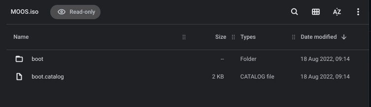
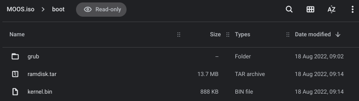

ISO Content
Welcome to the ISO Content Page, here you will learn the contents of the MOOS ISO and how each file play's it's role within the MOOS OS
Root ISO
In the image below you can see we are in the MOOS ISO, if you want to enter the MOOS ISO I'd recommend you take a read about Step 2 on this page, once you find the ISO double click it and your in!
Let's take a look at the picture above, we have 1 folder and 1 file, boot.catalog, which is the file, doesn't contain much to go through, next we have the boot folder, this is the main item which allows MOOS to boot.
In the image above we can see the content inside the boot folder, we have a file called "ramdisk.tar", ramdisk.tar contains all the file system where the applications, images and all sorts of items MOOS uses to run. We also have "kernel.bin" which as you may have guessed it contains the kernel for our OS